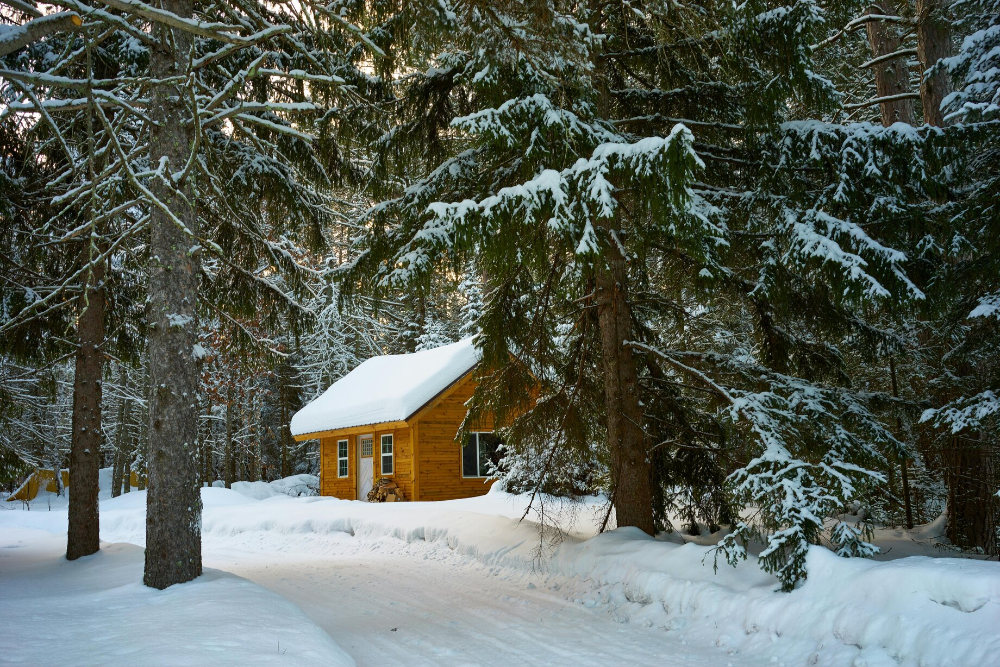
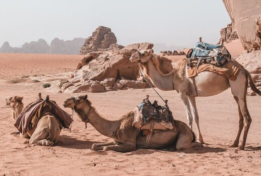

Boreal forest has been called the world's largest land biome. In North America, it covers most of inland Canada, Alaska, and parts of the northern contiguous United States. In Eurasia, it covers most of Sweden, Finland, much of Russia from Karelia in the west to the Pacific Ocean (including much of Siberia), much of Norway and Estonia, some of the Scottish Highlands,[citation needed] some lowland/coastal areas of Iceland, and areas of northern Kazakhstan, northern Mongolia, and northern Japan

The Sahara is a desert spanning North Africa. With an area of 9,200,000 square kilometres (3,600,000 sq mi), it is the largest hot desert in the world and the third-largest desert overall, smaller only than the deserts of Antarctica and the northern Arctic.
Lake Atitlán (Spanish: Lago de Atitlán) is a lake in the Guatemalan Highlands of the Sierra Madre mountain range. The lake is located in the Sololá Department of southwestern Guatemala. It is known as the deepest lake in Central America.
Atitlán means "between the waters". In the Nahuatl language, "atl" is the word for water, and "titlan" means between. The "tl" at the end of the word "atl" is dropped (because it is a grammatical suffix) and the words are combined to form "Atitlán".